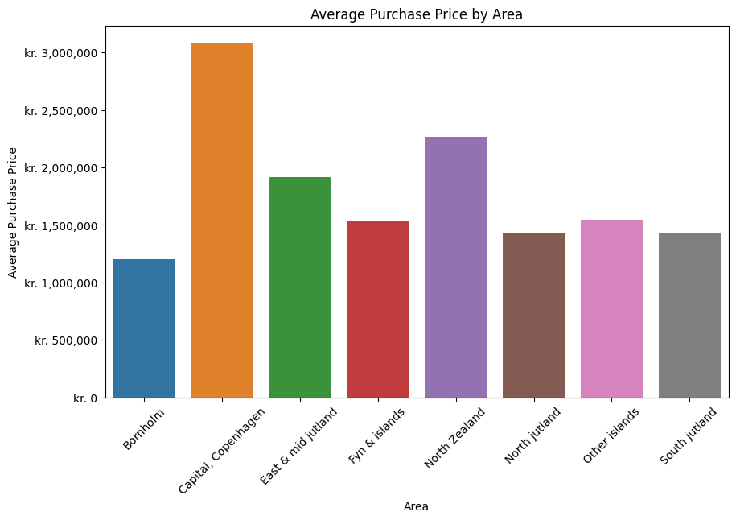

As a cringe millenial would say - I did a thing - which is technically true
I have been working with the Danish housing market dataset on kaggle and had some fun with it
Here is the link to the notebook: Danish Housing Market
I did this project because I realised - I havent done a self serving data analysis project in a while but I decided to try this out and thought it would be fun which it was
The time is currently 3:11am - on the 18th January 2025.
I included one of the graphs on this page but you'll have to explore the rest for yourself (no suprise the capital is the most expensive)
